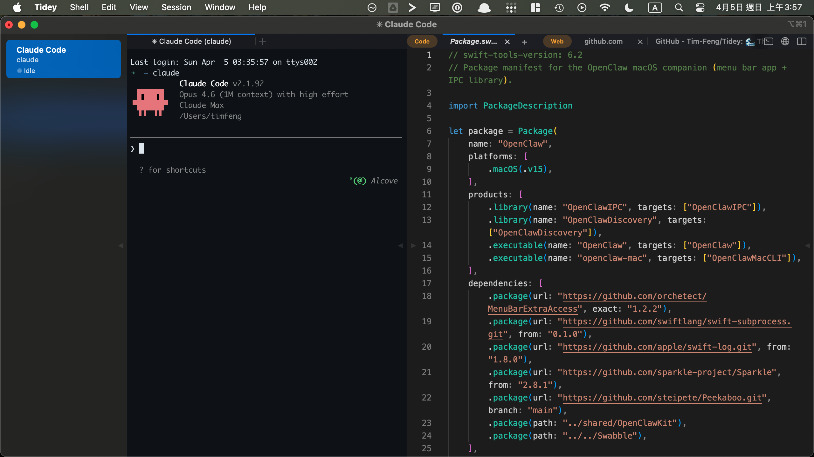
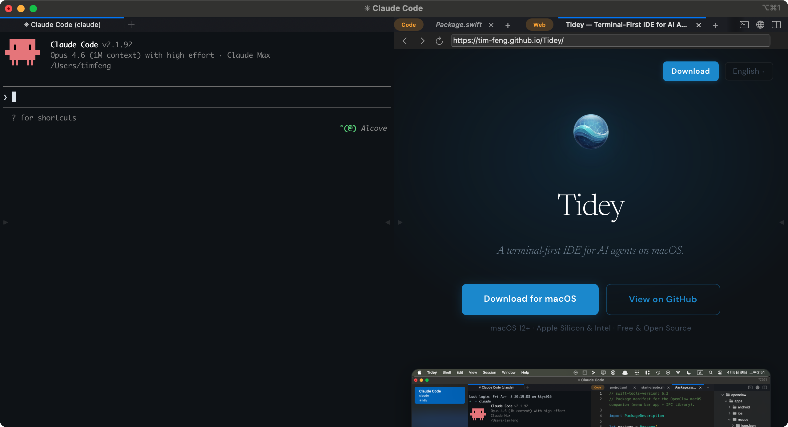
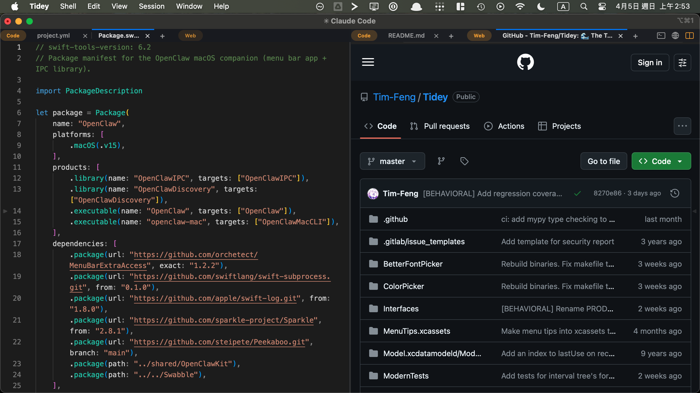

Tidey
A terminal-first IDE for AI agents on macOS.
macOS 12+ · Apple Silicon & Intel · Free & Open Source
Features
Workspaces·
Sidebar shows workspace status, working directory, and notifications. ⌘1–⌘9 to switch.
Notifications·
Workspace lights up when an agent finishes or needs attention. Supports macOS native notifications.
Built-in Editor·
⌘-click any path in the terminal to open it. Monaco engine, syntax highlighting.
Split View·
Split the editor into two panes, mix code and web tabs, drag tabs between panes. Terminal splits too.
In-app Browser·
⌘-click URLs in the terminal to open them in the built-in browser panel, without leaving the IDE.
Terminal Core·
Built on iTerm2. Mature and stable. Native Objective-C + Swift, no Electron.
Agent-Ready·
Works with any CLI agent. Auto-tracks Running / Idle / Needs Input. Claude Code, Codex compatible.
Keyboard-Driven·
Hold ⌘ to reveal shortcut hints. ⌃1–⌃9 to switch panels.
Flexible Layouts
Arrange terminal, code, and web — your way.

Terminal + Code

Terminal + Browser

Code + Browser
FAQ
- What is Tidey?
- A macOS terminal app for running AI coding agents. Built on iTerm2 with a Monaco code editor built in.
- Is Tidey free?
- Yes, Tidey is free and open source. As for your CLI agents, use them the same way you always do — Tidey is the interface that manages them.
Ready to try?
macOS 12+ · Apple Silicon & Intel · Free & Open Source